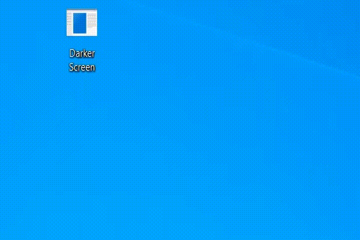

Darker Screen is an application that allows you to darken your screen more than would be possible with built in features of your laptop or PC.
A common problem that people enounter when watching, working or gaming at night, is a glaring screen in a dark room - and even on the lowest settings possible, the screen is too bright.
This is the reason I built Darker Screen - and now you can use it too!

Example of darker screen in use
Download for Windows
Download the latest version hereVersion History
| Version | Description | Download |
|---|---|---|
| v1.0 | Control panel with slider to control the opacity of the overlay. | Download |